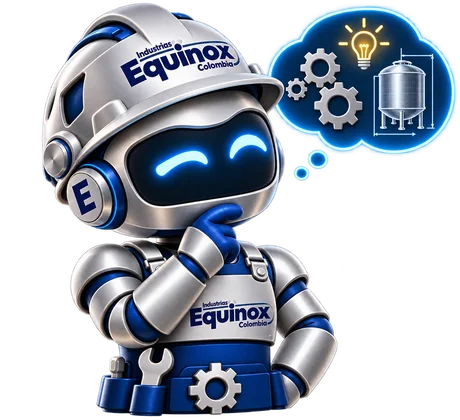

Cada equipo empieza como un plano.
Antes de cortar acero, la línea se dibuja con tus medidas, tu volumen y el espacio de tu planta.
- Entrega
- Plano aprobado por el cliente
Tinas, pasteurizadores, tanques y moldes dimensionados para tu producto y tus litros diarios. Diseñamos, fabricamos e instalamos desde Antioquia.
Siete tipos de planta, cada uno con su línea de equipos. Elige la tuya y mira qué lleva.
Imágenes reales de una línea de mozzarella en operación: la cuajada entra a la tolva, la pasta sale hilada y llena el molde, y los moldes llenos se van en carros a enfriar.
Video real
Desmenuzada, directo a la tolva.
La pasta cae caliente y llena el molde. Molde mozzarella
Esperan en la mesa, al lado de la máquina.
Carros escabiladeros cargados de moldes. Carro escabiladero
¿Cómo quedaría esta línea con tu leche? Mírala armada en 3D, con el recorrido de principio a fin.
Ver la línea de mozzarella en 3DEquipos fabricados por Equinox en acero inoxidable. Toca uno para ver su ficha, su plano y cómo funciona en 3D.
Fotos realesVer los 19 equipos
Lo que el cliente no ve también se fabrica con cuidado: la pared, el aislamiento y el agitador.
Especificaciones de muestra
Antes de cortar acero, la línea se dibuja con tus medidas, tu volumen y el espacio de tu planta.
Cuerpo, tapa, patas y accesorios en acero inoxidable con acabado sanitario, fácil de lavar.
La leche toca solo la pared interior pulida. El aislamiento entre las dos paredes mantiene la temperatura.
Un motorreductor mueve paletas lentas que reparten el frío por todo el volumen.
Tapa de inspección, válvula sanitaria de descarga y patas regulables para fincas y centros de acopio.
Una sola empresa responde por el plano, la fabricación y el arranque del equipo en tu planta.
Visita, medidas del espacio y plano de la línea.
Lámina cortada, rolada y preparada para soldar.
Uniones lisas y continuas, sin rincones donde se acumule leche.
Montaje, puesta en marcha y orientación a tu personal.
Elige tu producto y tus litros diarios, ubica cada equipo en tu sala y mira el recorrido de la leche por toda la línea. El sistema avisa qué falta y qué se queda corto, y al final cotizas la planta completa o descargas el plano.
Producto, litros por día y medidas de la sala.
Arrastra los equipos; las tuberías se conectan solas.
Avisos de etapas faltantes, capacidades y espacio.
Envía la planta o descarga el plano en PDF.
Así se cuentan los casos de éxito. Estos tres son de muestra y se reemplazan por proyectos reales de Equinox, con permiso de cada cliente.
El jefe de calidad responde ante el Invima. Por eso cada equipo debe llegar con su respaldo, y su diseño debe cumplir los requisitos sanitarios de la Resolución 2674 de 2013.
No porosas, sin grietas ni rincones donde se acumule producto.
Uniones y accesorios pensados para limpieza y desinfección.
Inoxidable AISI 304 en todas las partes que tocan el alimento.
Te respondemos con una propuesta técnica. Son cinco pasos cortos y lo que respondas lo recibe un ingeniero antes de llamarte.
Compromisos propuestos para Equinox
¿Prefieres conversar? El asistente te hace las mismas preguntas y te deja hablando con un asesor por WhatsApp.
Lo que más preguntan los compradores de equipos.
Respuestas de muestra: Equinox las ajusta

El asistente la prepara contigo y te pasa con un asesor por WhatsApp.
Sí. Cada equipo se define según tu producto, tus litros diarios y el espacio disponible en la planta.
Depende del equipo y de la capacidad. Cada cotización trae el plazo de entrega por escrito.
La cotización incluye el lugar de instalación. Equinox confirma la cobertura y el costo de traslado de su equipo técnico.
La garantía queda por escrito en la cotización, con su alcance y su vigencia para cada equipo.
Sí. El servicio técnico incluye diagnóstico, mantenimiento, repuestos y soporte después de la entrega.
Cada cotización define anticipo y saldo. Si tu proyecto tiene financiación o recursos públicos, dilo en la solicitud y preparamos los documentos.